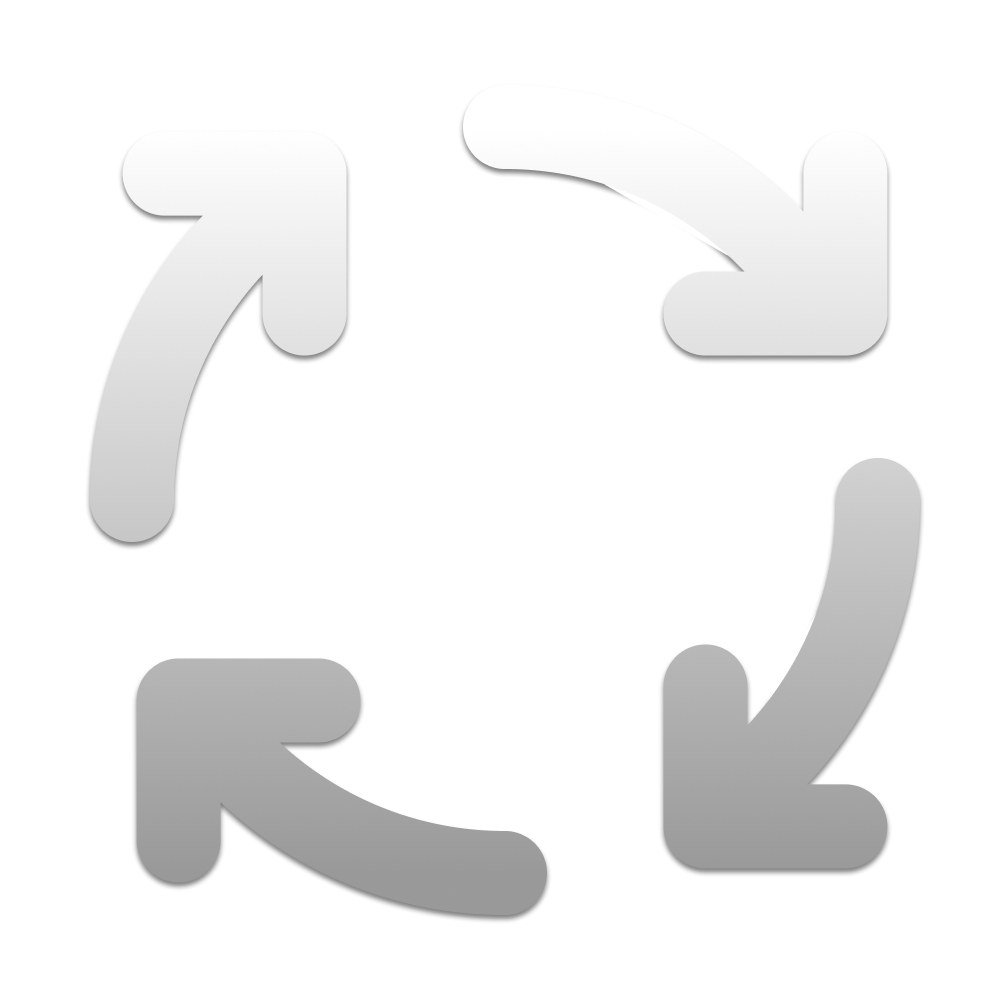

Are you sure?

RblxSwapClean out traces and caches safely to log into another account without linking prior sessions.
Leet opsec...
Would you like to spoof your MAC address(es) for extra safety? This may disrupt network temporarily.
Tip: Remember to clear your roblox.com cookies too!
Background Base
Background Accent
Text Color
Success Accent (Good)
Error Accent (Bad)
Background Image
No file selected
Hide Grid Overlay
These are advanced options. If you don't know what these do, it's safer to choose "Simple MAC" in Settings.